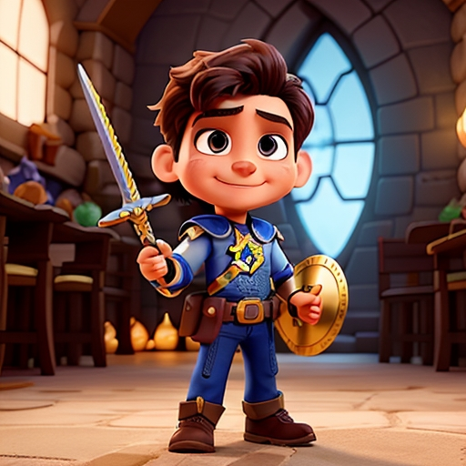
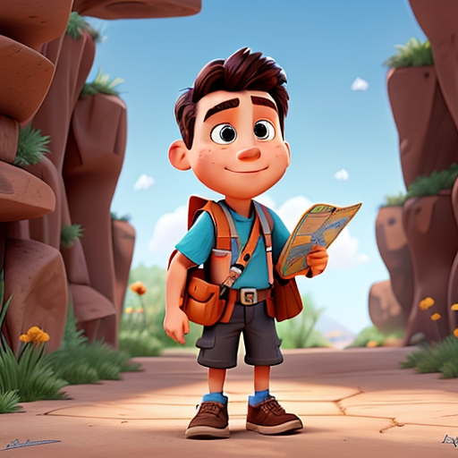
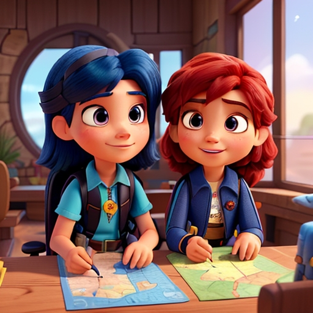
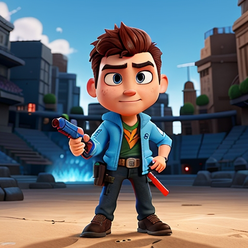

-
CONQUISTADOR

(ACHIEVER)Descrição
Sempre em busca de novos desafios e metas a alcançar, cada conquista é uma vitória a comemorar e admirar. Movido pela sede de progresso e superação constante, os troféus são recompensas que alimentam meu instante. Não descanso até atingir o topo, onde quero me firmar, no jogo da vida, sou o conquistador que não para de lutar.
-
Explorador

(Explorer)Descrição
Nos cantos mais remotos do universo digital eu vou, descobrindo segredos, histórias e horizontes no avançar, cada novo lugar é uma chance de encantar e desvendar. A curiosidade é minha bússola, o desconhecido é meu amor. Explorar é mais do que jogar, é mergulhar em um mar, onde a descoberta é a aventura que me faz sempre explorar.
-
Socializador

(Socializer)Descrição
Nas redes do jogo, eu encontro amigos para compartilhar. Construo laços de amizade e momentos para recordar. Cada interação é um sorriso, uma troca, um olhar, o coração do jogo não são as regras, mas sim a conexão. A união nos desafios e vitórias, é o que me faz acreditar que no mundo virtual ou real, a amizade é minha motivação.
-
Predador

(Killer)Descrição
Na arena digital, eu sou o caçador, implacável e voraz. Com estratégia afiada, minha presa não tem saída nem paz. A competição é minha adrenalina, a vitória é meu único norte. Não há espaço para sentimentos, apenas para a ação forte. Meu objetivo é claro: dominar, subjugar, até o último compasso, no jogo da vida, sou o predador que não conhece cansaço.